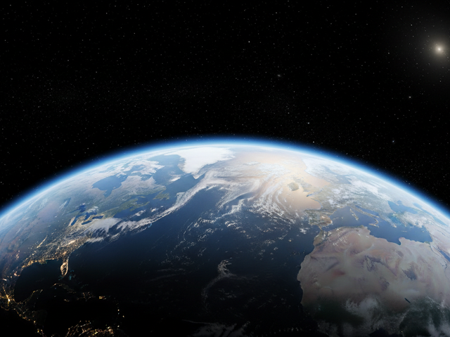
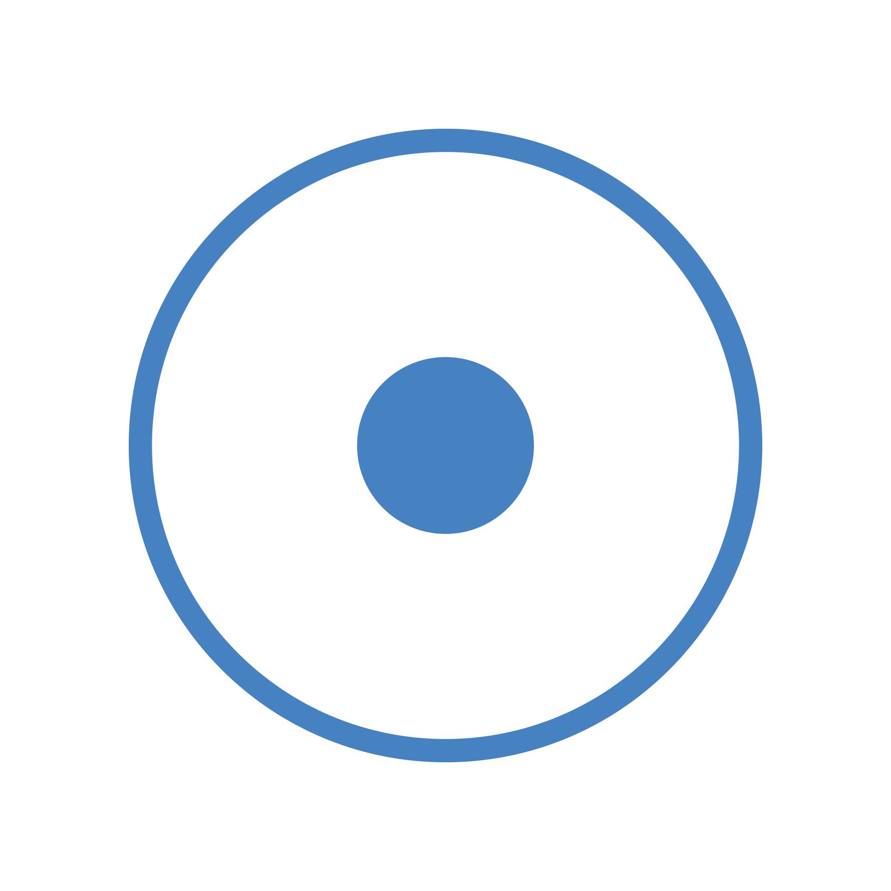
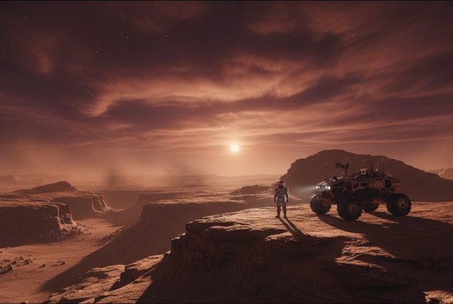
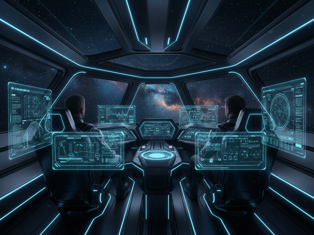
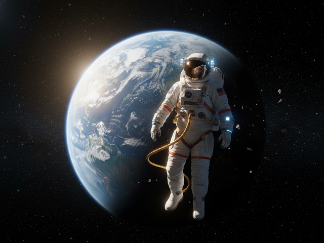
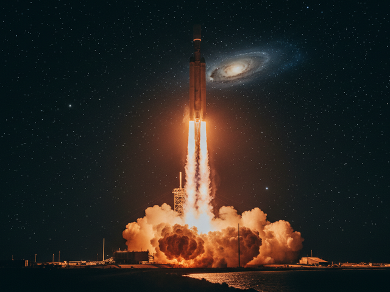
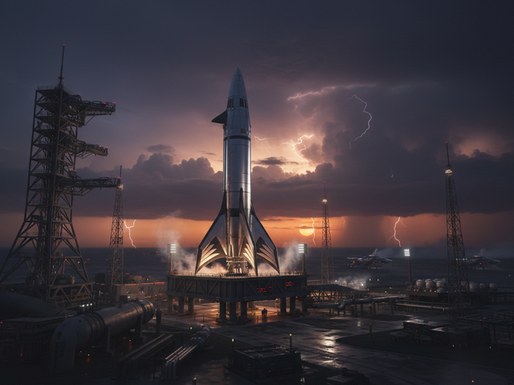

Artemis VII Marzo 2026
Misión tripulada a la órbita lunar para establecer estación de reabastecimiento.

Cada misión representa un paso adelante en nuestra comprensión del universo. Desde la órbita terrestre hasta los confines del sistema solar.

Misión tripulada a la órbita lunar para establecer estación de reabastecimiento.

Primer envío de suministros para la base marciana. Carga de 12 toneladas de equipamiento.

Sonda no tripulada de exploración profunda hacia el sistema Alpha Centauri.

Misión de exploración a la luna Titán de Saturno para análisis de su atmósfera.

Expansión de la estación orbital con nuevo módulo de investigación científica.

Misión submarina en la luna Europa de Júpiter para buscar vida bajo su corteza de hielo.